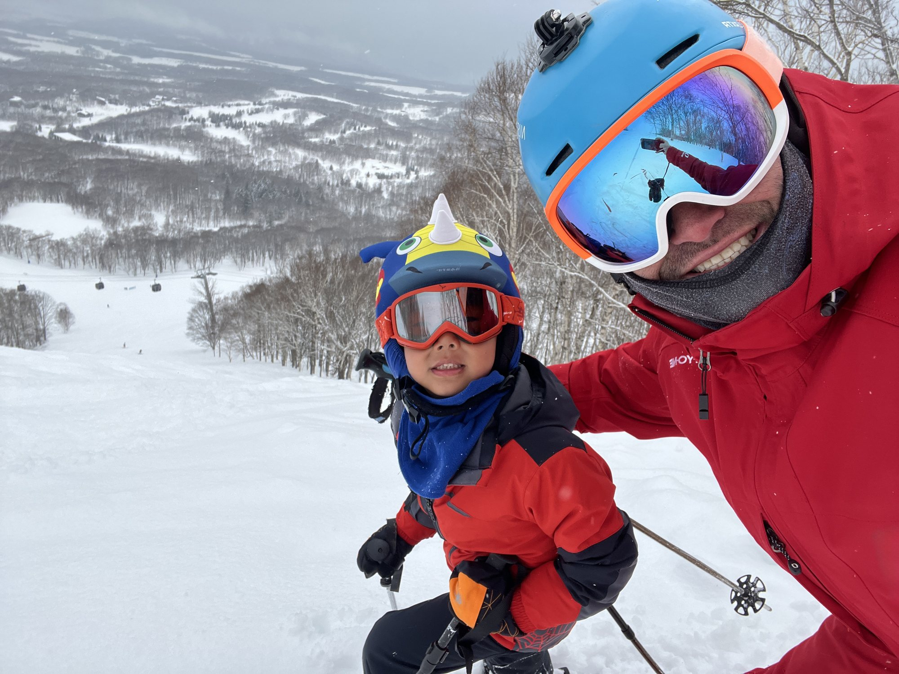
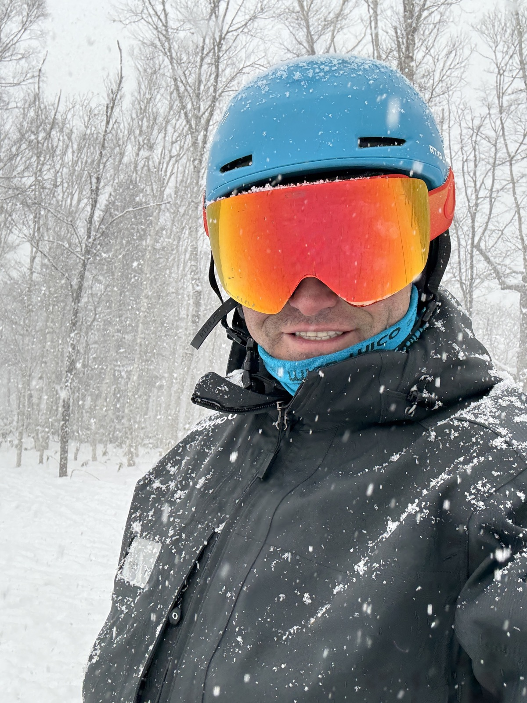
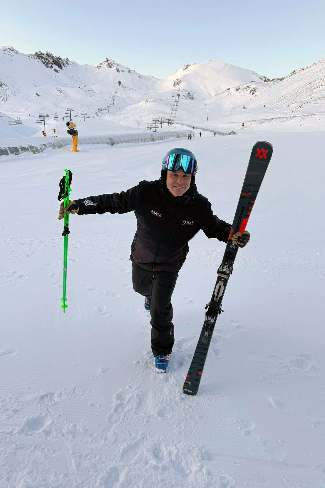
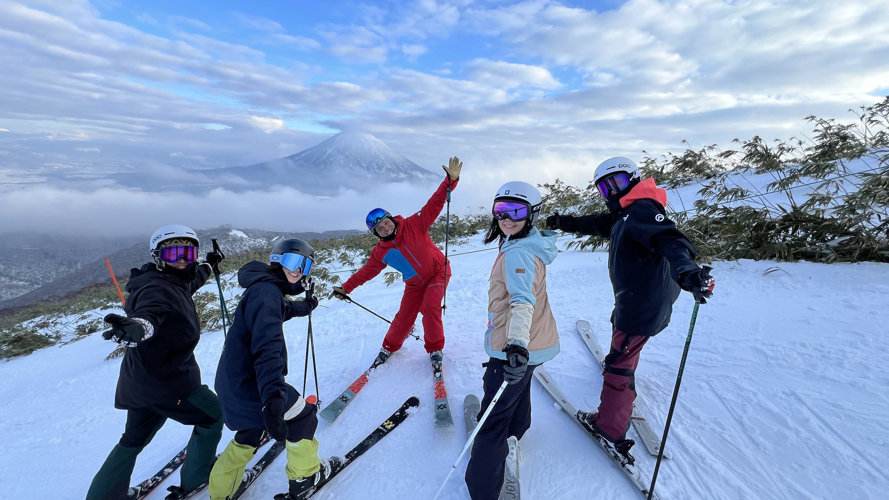
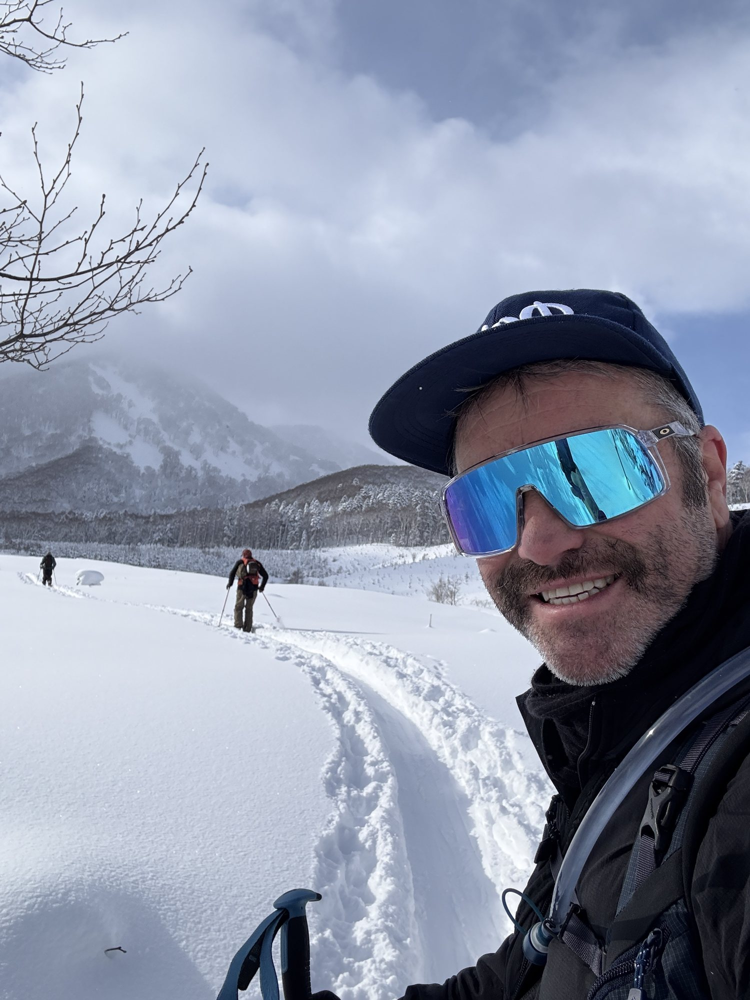

01 · Ski instruction
Teaching every level & age
From first turns to advanced all-mountain skiing, all ages and abilities, I adapt each lesson to the skier’s goals, learning style and confidence.
Japan · New Zealand
Ski with Ash in world-famous Niseko, Japan, or at The Remarkables and Coronet Peak in Queenstown, New Zealand. Ski instruction is tailored specifically to you—from your first day on skis to advanced, high-performance development. Ski instruction, race coaching, ski instructor training and guiding.

Ski with Ash
Great coaching begins with understanding the skier—their ability, confidence, goals and way of learning.
Across more than 25 seasons in New Zealand, Japan, North America and Europe, I’ve taught everyone from first-time skiers and families to instructors, race athletes and high-performance guests. I combine strong technical knowledge with clear, practical coaching that makes sense to the person in front of me.
A day with me is never an off-the-shelf lesson. We connect before you arrive, understand what you want from your skiing and shape the experience around your pace, confidence and goals. As conditions change, we can adapt the terrain, timing and focus so you get the best possible day on the mountain.
Race Level 1 · Freeski Level 1 · Children’s Ski Teaching Level 2 · Telemark Level 1 · ASC2 · AST Level 2

From first turns to advanced all-mountain skiing, all ages and abilities, I adapt each lesson to the skier’s goals, learning style and confidence.

Technical and tactical coaching for developing and experienced racers. This winter I coach U12 athletes with QAST, building strong foundations, confidence and performance habits—and adaptable skiers with a lifelong love of the sport.

Professional development, technical understanding and exam preparation. As a PSIE Licensed Professional Trainer, I’ve helped build and deliver high-quality programmes in Queenstown, New Zealand and Niseko, Japan.

From resort orientation and terrain selection to flexible days exploring different mountains, I help you find experiences suited to the conditions, your ability and your goals.